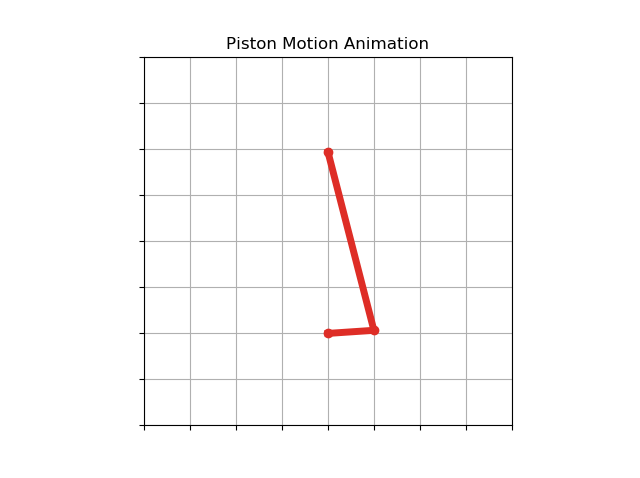

Piston motion is one of the classic types of motion in engineering dynamics that belong to a category of 4-bar motion. Piston motion is the type of motion that the piston in a cylinder of a car engine goes through as the engine's crankshaft rotates. In this post, we'll review how to use Python and Matplotlib to build a moving animation of piston motion.
Set up a Python virtual environment
To start this process, we will set up a virtual environment in Python.
Real Python has a good introduction to virtual environments and why to use them.
I recommend undergraduate engineers use the Anaconda distribution of Python which comes with the Anaconda Prompt. You can create a new virtual environment by opening the Anaconda Prompt and typing:
Using the Anaconda Prompt:
> mkdir piston_motion
> cd piston_motion
> conda create -n piston_motion python=3.7
Alternatively, on MacOS or Linux, a virtual environment can be set up with a terminal prompt and pip.
Using a terminal on MacOS or Linux:
$ mkdir piston_motion
$ cd piston_motion
$ python3 -m venv venv
Install Python packages
Now that we have a new clean virtual environment with Python 3 installed, we need to install the necessary packages:
Using the Anaconda Prompt, activate the piston_motion virtual environment and use conda to install the following Python packages. Ensure the virtual environment you created above is activate when the packages are installed.
> conda activate piston_motion
(piston_motion) > conda install numpy
(piston_motion) > conda install matplotlib
Alternatively, if you are using MacOS or Linux, the packages can be installed with a terminal pip:
$ source venv/bin/activate
(venv) $ pip install numpy
(venv) $ pip install matplotlib
Create a new Python file
Next, open a text editor (I like to use VS Code) and create a new Python file called piston_motion.py
Import packages
We will start our piston_motion.py script by importing the necessary modules. NumPy is imported as the common alias np. Besides importing Matplotlib's pyplot module, we'll also import Matplotlib's animation module.
#import necessary packages
import numpy as np
from numpy import pi, sin, cos, sqrt
import matplotlib.pyplot as plt
import matplotlib.animation as animation
To model piston motion, we need to animate two moving parts: a crankshaft and a connecting rod.
The crankshaft rotates around a central axis and has a constant radius. We'll model the crankshaft as a line of constant length, one end fixed at the origin and the other rotating in a circle like a hand on a clock. To model this line, we just need two points, the origin at x=0 and y=0 and the end of the line at the point x1 and x2.
We also need to define a crank radius and a connecting rode length. We will define these constants at the top of our script below the import lines.
We'll set a fixed number of rotations so that the animation does not run around indefinitely. As our crankshaft arm rotates, the rotation increment defines how closely spaced the 'ticks' are. A rotation increment of 0.1 will make our animation appear smooth enough.
# input parameters
r = 1.0 # crank radius
l = 4.0 # connecting rod length
rot_num = 4 # number of crank rotations
increment = 0.1 # angle increment
Arrays of angles and points
Next, we'll create an array of angles starting from zero radians up to the number of rotations (times 2 pi radians), stepping by our increment amount. NumPy's np.arange() function accepts the arguments (start,stop,step).
NumPy follows the same counting convention, so if we want the final value in our angle array to be rot_num*2*pi, we need to add the increment amount to stop value and set the stop argument as rot_num*2*pi+increment.
# create the angle array, where the last angle is the number of rotations*2*pi
angles = np.arange(0,rot_num*2*pi+increment,increment)
Once we have all the rotation angles in an array, we can set up empty arrays for the points in our animation. These point arrays need to have the same number of entries as the angles array:
X1 = np.zeros(len(angles)) # array of crank x-positions: Point 1
Y1 = np.zeros(len(angles)) # array of crank y-positions: Point 1
X2 = np.zeros(len(angles)) # array of rod x-positions: Point 2
Y2 = np.zeros(len(angles)) # array of rod y-positions: Point 2
Fill the point arrays
Now we'll populate the point arrays with values according to the geometry of piston motion:
for index,theta in enumerate(angles, start=0):
x1 = r*cos(theta) # x-cooridnate of the crank: Point 1
y1 = r*sin(theta) # y-cooridnate of the crank: Point 1
x2 = 0 # x-coordinate of the rod: Point 2
# y-coordinate of the rod: Point 2
y2 = r*sin(theta) + sqrt( l**2 - (r*cos(theta))**2 )
X1[index] = x1 # crankshaft x-position
Y1[index] = y1 # crankshaft y-position
X2[index] = x2 # connecting rod x-position
Y2[index] = y2 # connecting rod y-position
Set up the Matplotlib figure
Now that the point arrays are full, we have the values necessary to build our animation. We can start building the animation using these arrays of points. In this plotting section of the script, it is important to set aspect='equal' and autoscale_on=False; otherwise the x and y axes will not have the same scale and the animation will look ovoid instead of circular.
# set up the figure and subplot
fig = plt.figure()
fig.canvas.set_window_title('Matplotlib Animation')
ax = fig.add_subplot(111, aspect='equal', autoscale_on=False, xlim=(-4,4), ylim=(-2,6))
ax.grid()
ax.set_title('Piston Motion Animation')
ax.axes.xaxis.set_ticklabels([])
ax.axes.yaxis.set_ticklabels([])
line, = ax.plot([], [], 'o-', lw=5, color='#de2d26')
Initialization Function
The animation requires an initialization function. Let's code the initialization function next.
# initialization function
def init():
line.set_data([], [])
return line,
Animation Function
Finally on to building the animation function. We are almost done with our script.
# animation function
def animate(i):
x_points = [0, X1[i], X2[i]]
y_points = [0, Y1[i], Y2[i]]
line.set_data(x_points, y_points)
return line,
Call and show the animation
The last part of our Python script will call the animation and show the Matplotlib figure. Notice how the figure fig, animation function animate and initialization function init are passed to the FuncAnimation() class.
# call the animation
ani = animation.FuncAnimation(fig, animate, init_func=init, frames=len(X1), interval=40, blit=True, repeat=False)
## to save animation, uncomment the line below:
## ani.save('offset_piston_motion_animation.mp4', fps=30, extra_args=['-vcodec', 'libx264'])
#show the animation
plt.show()
Run the script
The animation can be visualized by running the piston_motion.py script.
You can run the script using the Anaconda prompt or a terminal. Make sure the virtual environment we created above is active when the command is run.
> python piston_motion.py
Results
A frame from the resulting animation is below.
A video of the resulting animation is below.
The complete script
The complete piston_motion.py script is below. The script can also be found in a GitHub repo here.
# piston_motion.py
"""
Piston Motion Animation using Matplotlib.
Author: Peter D. Kazarinoff, 2019
MIT License
"""
#import necessary packages
import numpy as np
from numpy import pi, sin, cos, sqrt
import matplotlib.pyplot as plt
import matplotlib.animation as animation
# input parameters
r = 1.0 # crank radius
l = 4.0 # connecting rod length
rot_num = 4 # number of crank rotations
increment = 0.1 # angle increment
# create the angle array, where the last angle is the number of rotations*2*pi
angles = np.arange(0,rot_num*2*pi+increment,increment)
X1=np.zeros(len(angles)) # array of crank x-positions: Point 1
Y1=np.zeros(len(angles)) # array of crank y-positions: Point 1
X2=np.zeros(len(angles)) # array of rod x-positions: Point 2
Y2=np.zeros(len(angles)) # array of rod y-positions: Point 2
#find the crank and connecting rod positions for each angle
for index,theta in enumerate(angles, start=0):
x1 = r*cos(theta) # x-cooridnate of the crank: Point 1
y1 = r*sin(theta) # y-cooridnate of the crank: Point 1
x2 = 0 # x-coordinate of the rod: Point 2
# y-coordinate of the rod: Point 2
y2 = r*sin(theta) + sqrt( l**2 - (r*cos(theta))**2 )
X1[index] = x1 # crankshaft x-position
Y1[index] = y1 # crankshaft y-position
X2[index] = x2 # connecting rod x-position
Y2[index] = y2 # connecting rod y-position
# set up the figure and subplot
fig = plt.figure()
fig.canvas.set_window_title('Matplotlib Animation')
ax = fig.add_subplot(111, aspect='equal', autoscale_on=False, xlim=(-4,4), ylim=(-2,6))
ax.grid()
ax.set_title('Piston Motion Animation')
ax.axes.xaxis.set_ticklabels([])
ax.axes.yaxis.set_ticklabels([])
line, = ax.plot([], [], 'o-', lw=5, color='#de2d26')
# initialization function
def init():
line.set_data([], [])
return line,
# animation function
def animate(i):
x_points = [0, X1[i], X2[i]]
y_points = [0, Y1[i], Y2[i]]
line.set_data(x_points, y_points)
return line,
# call the animation
ani = animation.FuncAnimation(fig, animate, init_func=init, frames=len(X1), interval=40, blit=True, repeat=False)
## to save animation, uncomment the line below:
## ani.save('offset_piston_motion_animation.mp4', fps=30, extra_args=['-vcodec', 'libx264'])
#show the animation
plt.show()